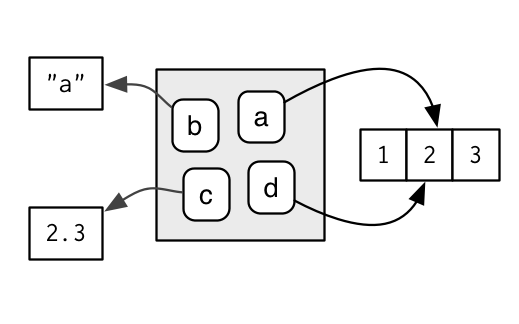
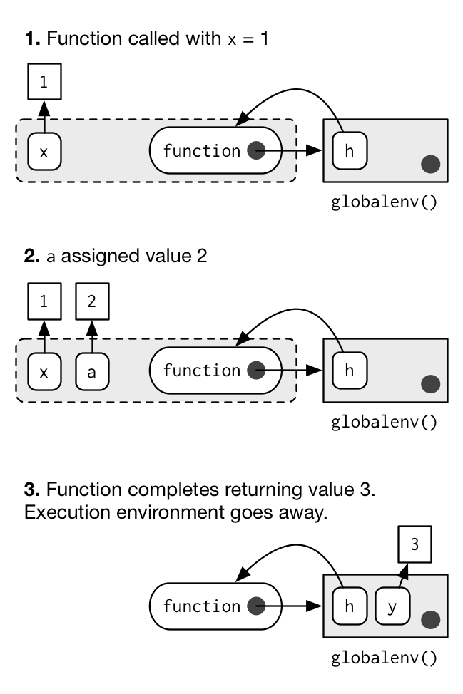
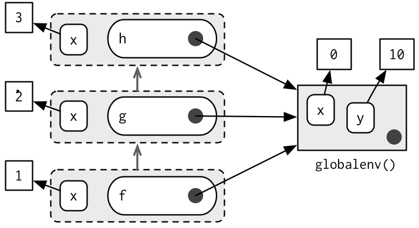

6 Environments
The environment is the data structure that powers scoping. This chapter dives deep into environments, describing their structure in depth, and using them to improve your understanding of the four scoping rules described in lexical scoping.
Environments can also be useful data structures in their own right because they have reference semantics. When you modify a binding in an environment, the environment is not copied; it’s modified in place. Reference semantics are not often needed, but can be extremely useful.
6.0.0.0.1 Quiz
If you can answer the following questions correctly, you already know the most important topics in this chapter. You can find the answers at the end of the chapter in answers.
List at least three ways that an environment is different to a list.
What is the parent of the global environment? What is the only environment that doesn’t have a parent?
What is the enclosing environment of a function? Why is it important?
How do you determine the environment from which a function was called?
How are
<-and<<-different?
6.0.0.0.2 Outline
Environment basics introduces you to the basic properties of an environment and shows you how to create your own.
Recursing over environments provides a function template for computing with environments, illustrating the idea with a useful function.
Function environments revises R’s scoping rules in more depth, showing how they correspond to four types of environment associated with each function.
Binding names to values describes the rules that names must follow (and how to bend them), and shows some variations on binding a name to a value.
Explicit environments discusses three problems where environments are useful data structures in their own right, independent of the role they play in scoping.
6.0.0.0.3 Prerequisites
This chapter uses many functions from the pryr package to pry open R and look inside at the messy details. You can install pryr by running install.packages("pryr")
6.1 Environment basics
The job of an environment is to associate, or bind, a set of names to a set of values. You can think of an environment as a bag of names:

Each name points to an object stored elsewhere in memory:
e <- new.env()
e$a <- FALSE
e$b <- "a"
e$c <- 2.3
e$d <- 1:3
The objects don’t live in the environment so multiple names can point to the same object:
e$a <- e$d
Confusingly, they can also point to different objects that have the same value:
e$a <- 1:3
If an object has no names pointing to it, it gets automatically deleted by the garbage collector. This process is described in more detail in gc.
Every environment has a parent, another environment. In diagrams, I’ll represent the pointer to parent with a small black circle. The parent is used to implement lexical scoping: if a name is not found in an environment, then R will look in its parent (and so on). Only one environment doesn’t have a parent: the empty environment.

We use the metaphor of a family to refer to environments. The grandparent of an environment is the parent’s parent, and the ancestors include all parent environments up to the empty environment. It’s rare to talk about the children of an environment because there are no back links: given an environment we have no way to find its children.
Generally, an environment is similar to a list, with four important exceptions:
Every name in an environment is unique.
The names in an environment are not ordered (i.e., it doesn’t make sense to ask what the first element of an environment is).
An environment has a parent.
Environments have reference semantics.
More technically, an environment is made up of two components, the frame, which contains the name-object bindings (and behaves much like a named list), and the parent environment. Unfortunately “frame” is used inconsistently in R. For example, parent.frame() doesn’t give you the parent frame of an environment. Instead, it gives you the calling environment. This is discussed in more detail in calling environments.
There are four special environments:
The
globalenv(), or global environment, is the interactive workspace. This is the environment in which you normally work. The parent of the global environment is the last package that you attached withlibrary()orrequire().The
baseenv(), or base environment, is the environment of the base package. Its parent is the empty environment.The
emptyenv(), or empty environment, is the ultimate ancestor of all environments, and the only environment without a parent.The
environment()is the current environment.
search() lists all parents of the global environment. This is called the search path because objects in these environments can be found from the top-level interactive workspace. It contains one environment for each attached package and any other objects that you’ve attach()ed. It also contains a special environment called Autoloads which is used to save memory by only loading package objects (like big datasets) when needed.
You can access any environment on the search list using as.environment().
search()
#> [1] ".GlobalEnv" "package:stats" "package:graphics"
#> [4] "package:grDevices" "package:utils" "package:datasets"
#> [7] "package:methods" "Autoloads" "package:base"
as.environment("package:stats")
#> <environment: package:stats>globalenv(), baseenv(), the environments on the search path, and emptyenv() are connected as shown below. Each time you load a new package with library() it is inserted between the global environment and the package that was previously at the top of the search path.

To create an environment manually, use new.env(). You can list the bindings in the environment’s frame with ls() and see its parent with parent.env().
e <- new.env()
# the default parent provided by new.env() is the environment from
# which it is called - in this case that's the global environment.
parent.env(e)
#> <environment: R_GlobalEnv>
ls(e)
#> character(0)The easiest way to modify the bindings in an environment is to treat it like a list:
e$a <- 1
e$b <- 2
ls(e)
#> [1] "a" "b"
e$a
#> [1] 1By default, ls() only shows names that don’t begin with .. Use all.names = TRUE to show all bindings in an environment:
e$.a <- 2
ls(e)
#> [1] "a" "b"
ls(e, all.names = TRUE)
#> [1] ".a" "a" "b"Another useful way to view an environment is ls.str(). It is more useful than str() because it shows each object in the environment. Like ls(), it also has an all.names argument.
str(e)
#> <environment: 0x7fc820d15408>
ls.str(e)
#> a : num 1
#> b : num 2Given a name, you can extract the value to which it is bound with $, [[, or get():
$and[[look only in one environment and returnNULLif there is no binding associated with the name.get()uses the regular scoping rules and throws an error if the binding is not found.
e$c <- 3
e$c
#> [1] 3
e[["c"]]
#> [1] 3
get("c", envir = e)
#> [1] 3Deleting objects from environments works a little differently from lists. With a list you can remove an entry by setting it to NULL. In environments, that will create a new binding to NULL. Instead, use rm() to remove the binding.
e <- new.env()
e$a <- 1
e$a <- NULL
ls(e)
#> [1] "a"
rm("a", envir = e)
ls(e)
#> character(0)You can determine if a binding exists in an environment with exists(). Like get(), its default behaviour is to follow the regular scoping rules and look in parent environments. If you don’t want this behavior, use inherits = FALSE:
x <- 10
exists("x", envir = e)
#> [1] TRUE
exists("x", envir = e, inherits = FALSE)
#> [1] FALSETo compare environments, you must use identical() not ==:
identical(globalenv(), environment())
#> [1] TRUE
globalenv() == environment()
#> Error in globalenv() == environment(): Vergleich (1) ist nur für atomare und Listentypen möglich6.1.1 Exercises
List three ways in which an environment differs from a list.
If you don’t supply an explicit environment, where do
ls()andrm()look? Where does<-make bindings?Using
parent.env()and a loop (or a recursive function), verify that the ancestors ofglobalenv()includebaseenv()andemptyenv(). Use the same basic idea to implement your own version ofsearch().
6.2 Recursing over environments
Environments form a tree, so it’s often convenient to write a recursive function. This section shows you how by applying your new knowledge of environments to understand the helpful pryr::where(). Given a name, where() finds the environment where that name is defined, using R’s regular scoping rules:
library(pryr)
x <- 5
where("x")
#> <environment: R_GlobalEnv>
where("mean")
#> <environment: base>The definition of where() is straightforward. It has two arguments: the name to look for (as a string), and the environment in which to start the search. (We’ll learn later why parent.frame() is a good default in calling environments.)
where <- function(name, env = parent.frame()) {
if (identical(env, emptyenv())) {
# Base case
stop("Can't find ", name, call. = FALSE)
} else if (exists(name, envir = env, inherits = FALSE)) {
# Success case
env
} else {
# Recursive case
where(name, parent.env(env))
}
}There are three cases:
The base case: we’ve reached the empty environment and haven’t found the binding. We can’t go any further, so we throw an error.
The successful case: the name exists in this environment, so we return the environment.
The recursive case: the name was not found in this environment, so try the parent.
It’s easier to see what’s going on with an example. Imagine you have two environments as in the following diagram:

If you’re looking for
a,where()will find it in the first environment.If you’re looking for
b, it’s not in the first environment, sowhere()will look in its parent and find it there.If you’re looking for
c, it’s not in the first environment, or the second environment, sowhere()reaches the empty environment and throws an error.
It’s natural to work with environments recursively, so where() provides a useful template. Removing the specifics of where() shows the structure more clearly:
f <- function(..., env = parent.frame()) {
if (identical(env, emptyenv())) {
# base case
} else if (success) {
# success case
} else {
# recursive case
f(..., env = parent.env(env))
}
}6.2.1 Exercises
Modify
where()to find all environments that contain a binding forname.Write your own version of
get()using a function written in the style ofwhere().Write a function called
fget()that finds only function objects. It should have two arguments,nameandenv, and should obey the regular scoping rules for functions: if there’s an object with a matching name that’s not a function, look in the parent. For an added challenge, also add aninheritsargument which controls whether the function recurses up the parents or only looks in one environment.Write your own version of
exists(inherits = FALSE)(Hint: usels().) Write a recursive version that behaves likeexists(inherits = TRUE).
6.3 Function environments
Most environments are not created by you with new.env() but are created as a consequence of using functions. This section discusses the four types of environments associated with a function: enclosing, binding, execution, and calling.
The enclosing environment is the environment where the function was created. Every function has one and only one enclosing environment. For the three other types of environment, there may be 0, 1, or many environments associated with each function:
Binding a function to a name with
<-defines a binding environment.Calling a function creates an ephemeral execution environment that stores variables created during execution.
Every execution environment is associated with a calling environment, which tells you where the function was called.
The following sections will explain why each of these environments is important, how to access them, and how you might use them.
6.3.1 The enclosing environment
When a function is created, it gains a reference to the environment where it was made. This is the enclosing environment and is used for lexical scoping. You can determine the enclosing environment of a function by calling environment() with a function as its first argument:
y <- 1
f <- function(x) x + y
environment(f)
#> <environment: R_GlobalEnv>In diagrams, I’ll depict functions as rounded rectangles. The enclosing environment of a function is given by a small black circle:

6.3.2 Binding environments
The previous diagram is too simple because functions don’t have names. Instead, the name of a function is defined by a binding. The binding environments of a function are all the environments which have a binding to it. The following diagram better reflects this relationship because the enclosing environment contains a binding from f to the function:

In this case the enclosing and binding environments are the same. They will be different if you assign a function into a different environment:
e <- new.env()
e$g <- function() 1
The enclosing environment belongs to the function, and never changes, even if the function is moved to a different environment. The enclosing environment determines how the function finds values; the binding environments determine how we find the function.
The distinction between the binding environment and the enclosing environment is important for package namespaces. Package namespaces keep packages independent. For example, if package A uses the base mean() function, what happens if package B creates its own mean() function? Namespaces ensure that package A continues to use the base mean() function, and that package A is not affected by package B (unless explicitly asked for).
Namespaces are implemented using environments, taking advantage of the fact that functions don’t have to live in their enclosing environments. For example, take the base function sd(). Its enclosing and binding environments are different:
## enclosing = where sd() finds values, such as mean() or var()
environment(sd)
#> <environment: namespace:stats>
## binding = where we can find sd()
where("sd")
#> <environment: package:stats>The definition of sd() uses var(), but if we make our own version of var() it doesn’t affect sd():
x <- 1:10
sd(x)
#> [1] 3.03
var <- function(x, na.rm = TRUE) 100
sd(x)
#> [1] 3.03This works because every package has two environments associated with it: the package environment and the namespace environment. The package environment contains every publicly accessible function, and is placed on the search path. The namespace environment contains all functions (including internal functions), and its parent environment is a special imports environment that contains bindings to all the functions that the package needs. Every exported function in a package is bound into the package environment, but enclosed by the namespace environment. This complicated relationship is illustrated by the following diagram:

When we type var into the console, it’s found first in the global environment. When sd() looks for var() it finds it first in its namespace environment so never looks in the globalenv().
6.3.3 Execution environments
What will the following function return the first time it’s run? What about the second?
g <- function(x) {
if (!exists("a", inherits = FALSE)) {
message("Defining a")
a <- 1
} else {
a <- a + 1
}
a
}
g(10)
g(10)This function returns the same value every time it is called because of the fresh start principle, described in a fresh start. Each time a function is called, a new environment is created to host execution. The parent of the execution environment is the enclosing environment of the function. Once the function has completed, this environment is thrown away.
Let’s depict that graphically with a simpler function. I draw execution environments around the function they belong to with a dotted border.
h <- function(x) {
a <- 2
x + a
}
y <- h(1)
When you create a function inside another function, the enclosing environment of the child function is the execution environment of the parent, and the execution environment is no longer ephemeral. The following example illustrates that idea with a function factory, plus(). We use that factory to create a function called plus_one(). The enclosing environment of plus_one() is the execution environment of plus() where x is bound to the value 1.
plus <- function(x) {
function(y) x + y
}
plus_one <- plus(1)
identical(parent.env(environment(plus_one)), environment(plus))
#> [1] TRUE
You’ll learn more about function factories in functional programming.
6.3.4 Calling environments
Look at the following code. What do you expect i() to return when the code is run?
h <- function() {
x <- 10
function() {
x
}
}
i <- h()
x <- 20
i()The top-level x (bound to 20) is a red herring: using the regular scoping rules, h() looks first where it is defined and finds that the value associated with x is 10. However, it’s still meaningful to ask what value x is associated with in the environment where i() is called: x is 10 in the environment where h() is defined, but it is 20 in the environment where h() is called.
We can access this environment using the unfortunately named parent.frame(). This function returns the environment where the function was called. We can also use this function to look up the value of names in that environment:
f2 <- function() {
x <- 10
function() {
def <- get("x", environment())
cll <- get("x", parent.frame())
list(defined = def, called = cll)
}
}
g2 <- f2()
x <- 20
str(g2())
#> List of 2
#> $ defined: num 10
#> $ called : num 20In more complicated scenarios, there’s not just one parent call, but a sequence of calls which lead all the way back to the initiating function, called from the top-level. The following code generates a call stack three levels deep. The open-ended arrows represent the calling environment of each execution environment.
x <- 0
y <- 10
f <- function() {
x <- 1
g()
}
g <- function() {
x <- 2
h()
}
h <- function() {
x <- 3
x + y
}
f()
#> [1] 13
Note that each execution environment has two parents: a calling environment and an enclosing environment. R’s regular scoping rules only use the enclosing parent; parent.frame() allows you to access the calling parent.
Looking up variables in the calling environment rather than in the enclosing environment is called dynamic scoping. Few languages implement dynamic scoping (Emacs Lisp is a notable exception.) This is because dynamic scoping makes it much harder to reason about how a function operates: not only do you need to know how it was defined, you also need to know in what context it was called. Dynamic scoping is primarily useful for developing functions that aid interactive data analysis. It is one of the topics discussed in non-standard evaluation.
6.3.5 Exercises
List the four environments associated with a function. What does each one do? Why is the distinction between enclosing and binding environments particularly important?
Draw a diagram that shows the enclosing environments of this function:
f1 <- function(x1) { f2 <- function(x2) { f3 <- function(x3) { x1 + x2 + x3 } f3(3) } f2(2) } f1(1)Expand your previous diagram to show function bindings.
Expand it again to show the execution and calling environments.
Write an enhanced version of
str()that provides more information about functions. Show where the function was found and what environment it was defined in.
6.4 Binding names to values
Assignment is the act of binding (or rebinding) a name to a value in an environment. It is the counterpart to scoping, the set of rules that determines how to find the value associated with a name. Compared to most languages, R has extremely flexible tools for binding names to values. In fact, you can not only bind values to names, but you can also bind expressions (promises) or even functions, so that every time you access the value associated with a name, you get something different!
You’ve probably used regular assignment in R thousands of times. Regular assignment creates a binding between a name and an object in the current environment. Names usually consist of letters, digits, . and _, and can’t begin with _. If you try to use a name that doesn’t follow these rules, you get an error:
_abc <- 1
# Error: unexpected input in "_"Reserved words (like TRUE, NULL, if, and function) follow the rules but are reserved by R for other purposes:
if <- 10
#> Error: unexpected assignment in "if <-"A complete list of reserved words can be found in ?Reserved.
It’s possible to override the usual rules and use a name with any sequence of characters by surrounding the name with backticks:
`a + b` <- 3
`:)` <- "smile"
` ` <- "spaces"
ls()
# [1] " " ":)" "a + b"
`:)`
# [1] "smile"The regular assignment arrow, <-, always creates a variable in the current environment. The deep assignment arrow, <<-, never creates a variable in the current environment, but instead modifies an existing variable found by walking up the parent environments.
x <- 0
f <- function() {
x <<- 1
}
f()
x
#> [1] 1If <<- doesn’t find an existing variable, it will create one in the global environment. This is usually undesirable, because global variables introduce non-obvious dependencies between functions. <<- is most often used in conjunction with a closure, as described in Closures.
There are two other special types of binding, delayed and active:
Rather than assigning the result of an expression immediately, a delayed binding creates and stores a promise to evaluate the expression when needed. We can create delayed bindings with the special assignment operator
%<d-%, provided by the pryr package.library(pryr) system.time(b %<d-% {Sys.sleep(1); 1}) #> User System verstrichen #> 0 0 0 system.time(b) #> User System verstrichen #> 0 0 1%<d-%is a wrapper around the basedelayedAssign()function, which you may need to use directly if you need more control. Delayed bindings are used to implementautoload(), which makes R behave as if the package data is in memory, even though it’s only loaded from disk when you ask for it.Active are not bound to a constant object. Instead, they’re re-computed every time they’re accessed:
x %<a-% runif(1) x #> [1] 0.0808 x #> [1] 0.834 rm(x)%<a-%is a wrapper for the base functionmakeActiveBinding(). You may want to use this function directly if you want more control. Active bindings are used to implement reference class fields.
6.4.1 Exercises
What does this function do? How does it differ from
<<-and why might you prefer it?rebind <- function(name, value, env = parent.frame()) { if (identical(env, emptyenv())) { stop("Can't find ", name, call. = FALSE) } else if (exists(name, envir = env, inherits = FALSE)) { assign(name, value, envir = env) } else { rebind(name, value, parent.env(env)) } } rebind("a", 10) #> Error: Can't find a a <- 5 rebind("a", 10) a #> [1] 10Create a version of
assign()that will only bind new names, never re-bind old names. Some programming languages only do this, and are known as single assignment languages.Write an assignment function that can do active, delayed, and locked bindings. What might you call it? What arguments should it take? Can you guess which sort of assignment it should do based on the input?
6.5 Explicit environments
As well as powering scoping, environments are also useful data structures in their own right because they have reference semantics. Unlike most objects in R, when you modify an environment, it does not make a copy. For example, look at this modify() function.
modify <- function(x) {
x$a <- 2
invisible()
}If you apply it to a list, the original list is not changed because modifying a list actually creates and modifies a copy.
x_l <- list()
x_l$a <- 1
modify(x_l)
x_l$a
#> [1] 1However, if you apply it to an environment, the original environment is modified:
x_e <- new.env()
x_e$a <- 1
modify(x_e)
x_e$a
#> [1] 2Just as you can use a list to pass data between functions, you can also use an environment. When creating your own environment, note that you should set its parent environment to be the empty environment. This ensures you don’t accidentally inherit objects from somewhere else:
x <- 1
e1 <- new.env()
get("x", envir = e1)
#> [1] 1
e2 <- new.env(parent = emptyenv())
get("x", envir = e2)
#> Error in get("x", envir = e2): Objekt 'x' nicht gefundenEnvironments are data structures useful for solving three common problems:
- Avoiding copies of large data.
- Managing state within a package.
- Efficiently looking up values from names.
These are described in turn below.
6.5.1 Avoiding copies
Since environments have reference semantics, you’ll never accidentally create a copy. This makes it a useful vessel for large objects. It’s a common technique for bioconductor packages which often have to manage large genomic objects. Changes to R 3.1.0 have made this use substantially less important because modifying a list no longer makes a deep copy. Previously, modifying a single element of a list would cause every element to be copied, an expensive operation if some elements are large. Now, modifying a list efficiently reuses existing vectors, saving much time.
6.5.2 Package state
Explicit environments are useful in packages because they allow you to maintain state across function calls. Normally, objects in a package are locked, so you can’t modify them directly. Instead, you can do something like this:
my_env <- new.env(parent = emptyenv())
my_env$a <- 1
get_a <- function() {
my_env$a
}
set_a <- function(value) {
old <- my_env$a
my_env$a <- value
invisible(old)
}Returning the old value from setter functions is a good pattern because it makes it easier to reset the previous value in conjunction with on.exit() (see more in on exit).
6.5.3 As a hashmap
A hashmap is a data structure that takes constant, O(1), time to find an object based on its name. Environments provide this behaviour by default, so can be used to simulate a hashmap. See the CRAN package hash for a complete development of this idea.
6.6 Quiz answers
There are four ways: every object in an environment must have a name; order doesn’t matter; environments have parents; environments have reference semantics.
The parent of the global environment is the last package that you loaded. The only environment that doesn’t have a parent is the empty environment.
The enclosing environment of a function is the environment where it was created. It determines where a function looks for variables.
Use
parent.frame().<-always creates a binding in the current environment;<<-rebinds an existing name in a parent of the current environment.